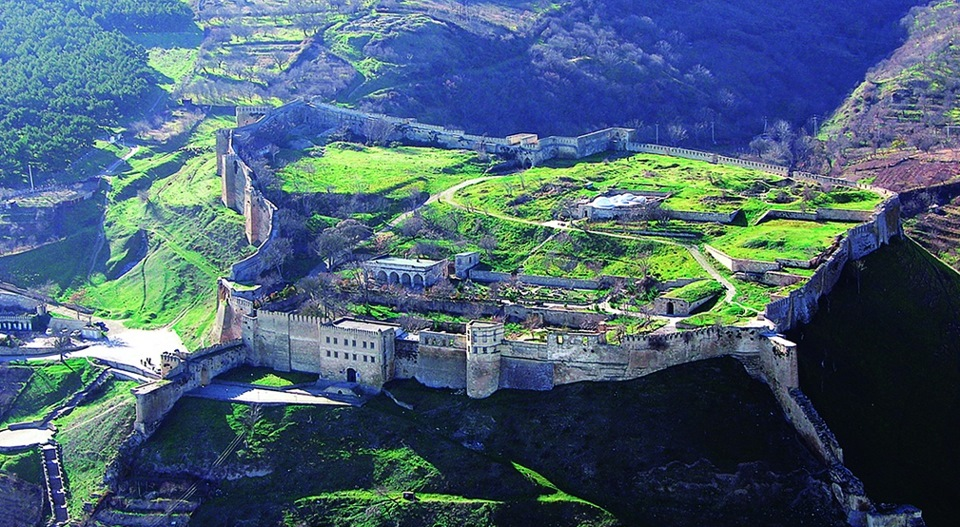
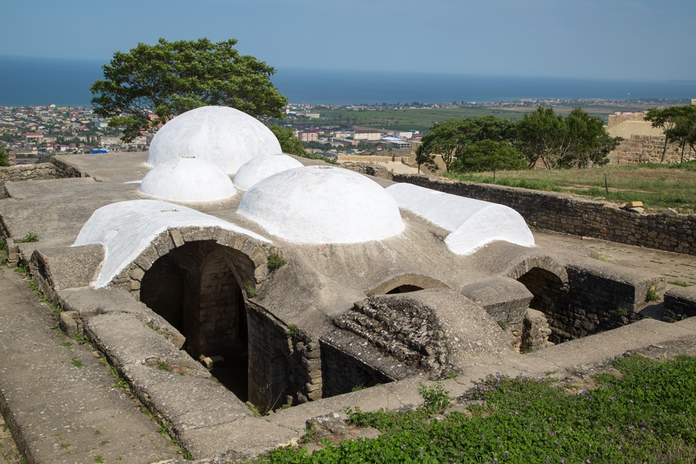
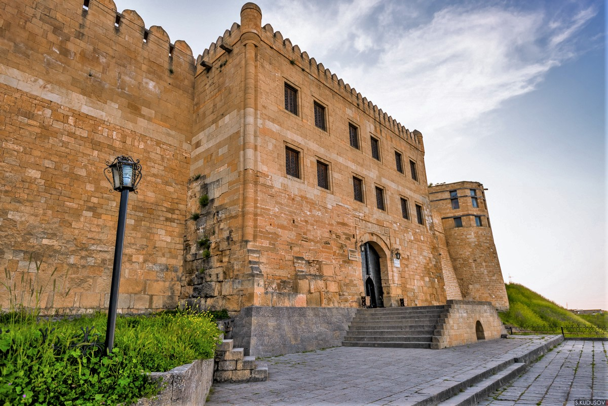

Еще одной древнейшей достопримечательностью некогда большого города Дербента принято считать крепость Нарын-Кала. Именно эта крепость стала основой «Закрытых ворот». Она имеет двойные стены, которые спускаются до самого Каспийского моря. С трех сторон крепость окружена мощными утесами, на протяжении всей стены крепости через каждые 25 метров расположены башни.
Крепость защищала проход в Персию. Сегодня крепость Нарын-Кала памятник истории и архитектуры и внесена в число памятников наследия ЮНЕСКО. Крепость занимала когда-то 4,5 гектар земли. Внутри крепости были, прежде всего, все необходимые для обороны сооружения. Например, в случае осады, в крепости находился огромный резервуар с питьевой водой. Этой воды в осажденной крепости хватало на полгода. Западные ворота крепости местные жители называют «воротами позора», так как через них ворота нерадивые военачальники, допустившие захват крепости, убегали прочь.
На баню мы сегодня можем посмотреть. Она не похожа на привычные бани прежде всего тем, что это почти полностью подземное сооружение — над землей только вход со стороны дворца. Два больших зала с купольными потолками согревались, как гласит предание, от единственной свечи. Технология обогрева утрачена, хотя энтузиасты пытались повторить этот средневековый фокус — безуспешно. Самая мрачная часть крепостного комплекса — зинданы, тюремные ямы с наклонными стенами, откуда узник не мог выбраться. Они находятся перед ханской канцелярией, где сидел суд. Из ямы малого зиндана узник слышал весь ход процесса. В конце судья подходил к окну на первом этаже и оглашал приговор, после чего арестованного могли помиловать или перевести в большой зиндан — кувшинообразную камеру смертников. От этих жутких ям исходило зловоние, и чтобы отбить неприятный дух, вокруг сажали айланты — деревья, в просторечье называемые «вонючкой». Растертые листья айланта издают сильный запах, отгоняющий насекомых, и обладают обеззараживающими свойствами. На территории крепости Нарын-кала до сих пор растут несколько таких деревьев — довольно красивые «вонючки».
Туристы вступают в цитадель через главные восточные ворота. На том месте, где сейчас музейная касса, раньше располагалась охрана. Прямо над воротами выстроено внушительное трехэтажное здание ханской канцелярии с парадным и служебным помещениями. Сейчас там размещается музей крепости. Среди многочисленных археологических находок, от каменных топоров до средневековых военных доспехов, тут можно увидеть древнейший артефакт — керамическую статуэтку богини плодородия, так называемую «Дербентскую мадонну». Ее нашли при раскопках в 1987 году и датировали III веком до н.э.
Первое, что видишь при входе в крепость — родник с чистой водой. Она такая холодная, что ломит зубы. Это часть сохранившейся системы водоснабжения — важнейшего элемента боеспособности крепости. Вода в Нарын-калу поступала по подземным керамическим трубам из источников на горе Джалган и хранилась в огромных каменных резервуарах, благодаря чему защитники могли выдержать длительную осаду. Семья хана пользовалась особым водохранилищем, которое стерегли вооруженные воины. Каждое утро слуга черпал воду, пробовал ее и только после этого относил во дворец.
От дворца осталось немного — портал с главным входом. Если включить воображение, можно представить, как это выглядело во всей своей восточной пышной красе. По рассказам, стены дворца были отделаны мрамором, витражные окна с внешней стороны натирали воском и жиром, чтобы они сияли на солнце. В ханских покоях был устроен бассейн с прохладной водой для купания в жаркие дни. Ежедневно топилась баня с теплыми полами и стенами. Правитель приходил сюда не только для того, чтобы банально помыться, но и чтобы поиграть в шахматы и заняться государственными делами, например заключить договор с иностранным послом.